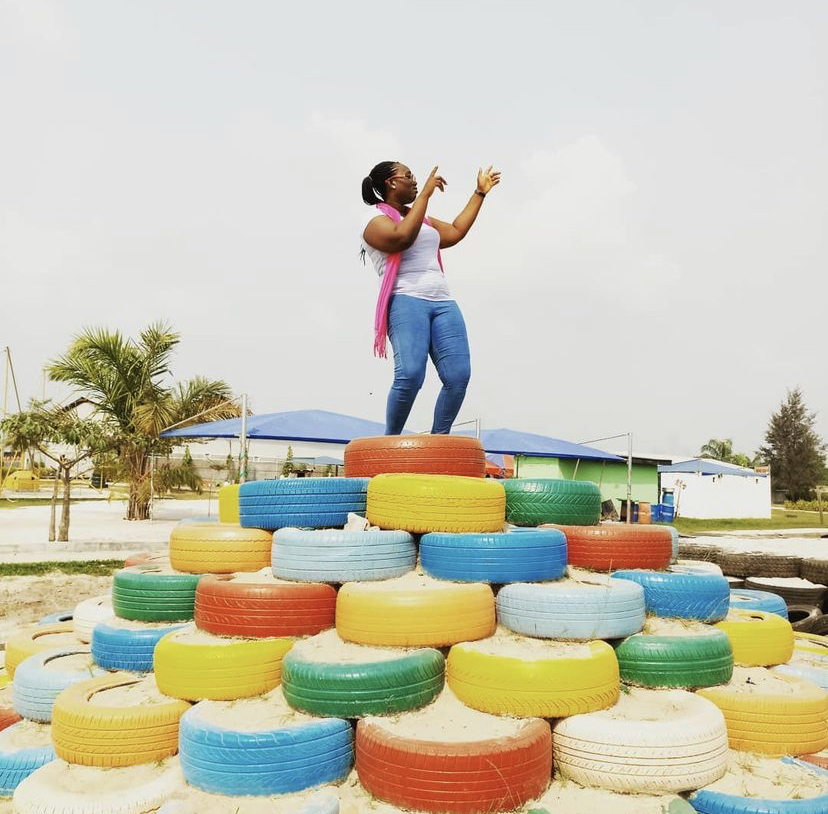
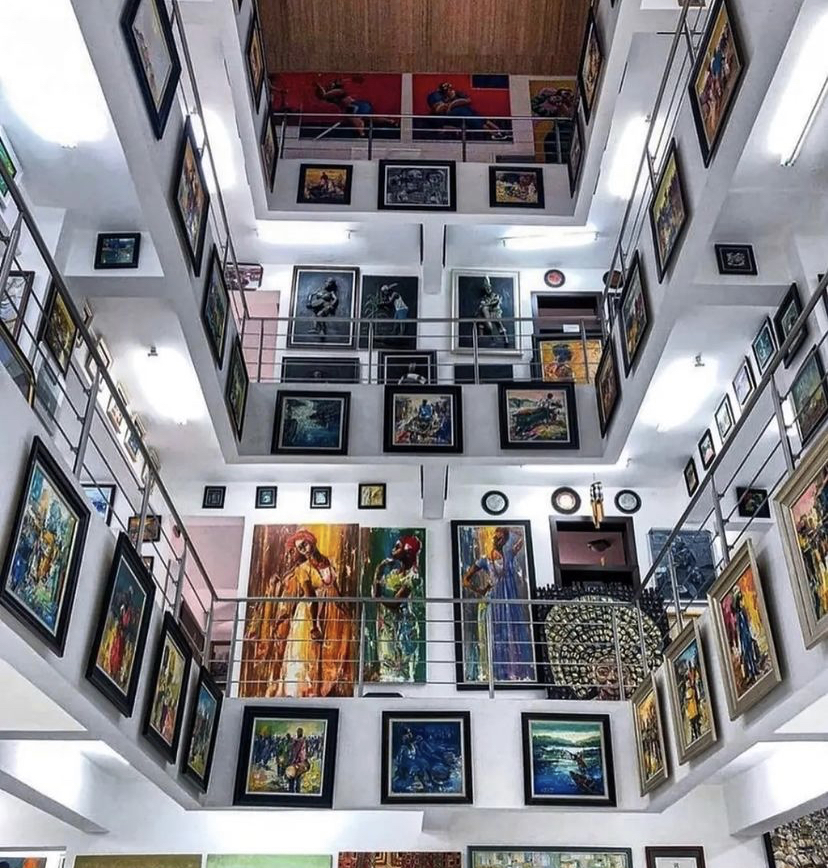

Lagos

Lagos is is the largest city in Nigeria and the second most populous city in Africa, with a population of 15.3 million as of 2015 within the city proper. It was the national capital of Nigeria until December 1991 before the government decided to move their capital to Abuja in the centre of the country. The Lagos metropolitan area has a total population of roughly 23.5 million as of 2018, making it the largest metropolitan area in Africa. Lagos is a major African financial centre and is the economic hub of Lagos State and Nigeria at large. The city has been described as the cultural, financial, and entertainment capital of Africa, and is a significant influence on commerce, entertainment, technology, education, politics, tourism, art, fashion. Lagos is also among the top ten of the world's fastest-growing cities and urban areas.
Amazing places to visit in Lagos
Omu Resort

Looking to get away from the stress of the city? This is the right spot for relaxation. Although, its quite a distance from the hustle and bustle of the city, you can spend book a lodge and spend a few days here. Omu resort is home to a zoo, amusement rides and you can even go on a quad bike for more fun. Whether you choose to go alone or with friends, you’ll have the time of your life a Omu resort.
Upbeat Recreational Centre
Located in the heart of Lekki Phase 1, this recreation centre is the perfect place to get your adrenaline pumping. With an array of fun activities, you get everything that you would normally not get anywhere else. It has a huge trampoline space that would wear kids out, so its just right to spend some time here. It’s fun, exciting and definitely something different.
Wave Beach
Overlooking the Atlantic ocean, Wave beach is definitely a great hangout spot for friends because nothing is truly as relaxing as the beach. This private beach nestled in the Elegushi area of Lekki, is opened every day and is very secure. Treat yourself to the perfect peach ambience. This place is suitable for both kids and adults.
Lekki Conservation Centre
Built mainly for the conservation and preservation of some animals and plants, LCC gives you a peak into how animals are in their natural habitats. Away from the noise of Lagos, this natural sanctuary is a great place to explore nature and you can make use of the longest canopy walk in Africa. This canopy walkway gives you an amazing view of the animals from the tree tops.
Nike Art Gallery

This art gallery is the perfect place for art lovers. Located in Lekki, Lagos, this five-storey building houses different kinds of art from many artists, a textile museum and a coffee shop. This is the perfect spot to learn more about African art and crafts.
Fela Shrine
Located in the capital of Lagos: Ikeja. The New Africa shrine renamed Fela shrine to honor legendary afrobeat icon Fela Anikulapo Kuti. This centre hosts a variety of events including performances by Femi Kuti and his band. You can indulge in a host of local delicacies like Jollof rice, Ayamase and ofada, peppered snails and lots more.
Jazzhole
A bookshop and record store in the heart of Ikoyi, Jazzhole is the perfect relaxing atmosphere. Lovers of books and contemporary music will find this place amazing. It provides the right ambience for book lovers with their diverse collection of books and records. Shop for books, read, buy yummy desserts, vinyl records and even listen to Jazz music here.
Tarkwa Bay
Although only accessible by a boat ride, this island is great for a get away from the city. Tarkwa bay is also very popular among water sport lovers. This is somewhere you can easily enjoy a chill day.
Pro's of living in lagos
- Diverse option of eating out
Lagos is a melting pot of cultures with Western, Asian and African influences. The city's food and eateries are equally diverse with a broad selection of internatonal and local dishes.
- Vibey atmosphere
Cultural ientity is important to Nigerians, and people from lagos are happy to welcome foreigners.
- English is widely spoken
- Stress-free accomodation arrangements
- High-quality international school education
Con's of living in lagos
- Overpopulation and Traffic
Alongside overpopulation and increased car ownership, there is also poor road infrastrucure and underdeveloped public transport
- Violent and increased crime rate
There are reports of kidnapping, car-jackig,armed robbery in Lagos.
- Flood risk
Not only is Lagos along the coast, it is also affected by rising sea levels by heavy rainfall due to rainy seasons